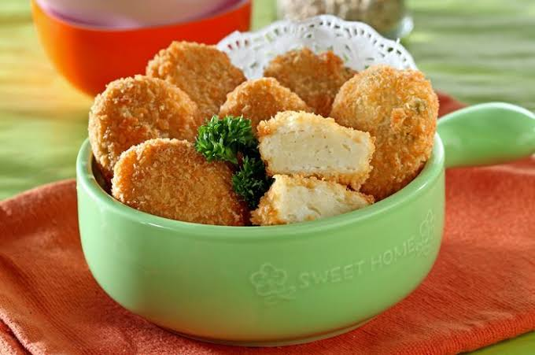
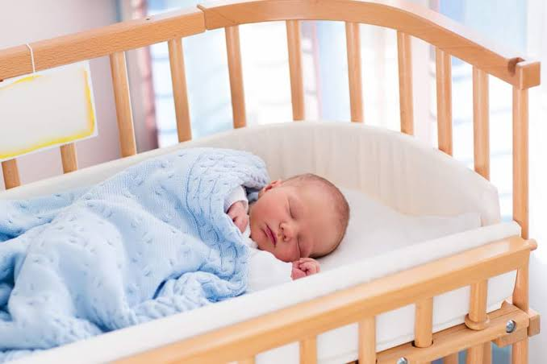

KUMPULAN NAMA BAYI LAKI-LAKI & PEREMPUAN
Memilih nama bayi selalu menjadi proses yang menyenangkan dan seru ya, Parent. Apalagi pasti Parent ingin nama sikecil menjadi doa yang baik untuk masa depanya nanti.
Agar tidak bingung memilih nama, yuk simak ragam pilihanya dibawah ini :)
Nama Bayi Perempuan Islami
 Nama Bayi Laki-Laki Islami
Nama Bayi Laki-Laki Islami
 Nama Bayi Perempuan Modern
Nama Bayi Perempuan Modern
 Nama Bayi Laki-Laki Modern
Nama Bayi Laki-Laki Modern
Artikel MPASI
 Menu MPASI
Menu MPASI
Bahasa Tubuh Bayi
About
NAMA BAYI PEREMPUAN ISLAMI
Nama Bayi Perempuan Islami
1. Alya = orang yang berhati halus dan lembut
2.Afzah = Gigih,kerja keras dan bertekad
3. Abiyah = Perempuan yang pintar
4. Baqis = Seorang wanita terhormat
5. Chaerunnisa = Wanita yang cantik
6. Chayra = Kebaikan
6. Delisha = Pembawa bahagia
7. Dhiyaulhaq: Sinaran kebenaran
8.Fatimah = Pendiam, lembut hati, anak dari Nabi Muhammad SAW
9. Firdha = Surga
10. Lathifah = Wanita yang lembut, baik
11. Nabilla = Pintar, cerdik
12. Safiqah = Penuh kasih, penyayang
13. Tsabitah = Pemberani
14. Yumna = Diberkahi, beruntung
Nama Bayi Perempuan 2 Kata
1. Afiza Ghania = Anak perempuan Islam yang cantik dan hafal seluruh isi Alquran
2. Amirah Lashira = Seorang perempuan yang cerdas dan banyak dipercaya orang lain.
3. Arisha Azzahra = Perempuan berperawakan tinggi, kuat dan memiliki kecerdasan luar biasa
4. Alya Sahira = Keindahan, kesejukan perempuan yang selalu memuji Allah Pencipta Langit dan Bumi
5. Hafla Selina = Kecerdasan dan pengetahuan luas seorang perempuan yang menyinari banyak orang
6. Nazinda Safaluna = Anak perempuan yang banyak memiliki ilmu pengetahuan untuk kepentingan orang banyak
7. Sabriya Almahyra = Kesabaran seorang perempuan yang menghasilkan keberhasilan, kesuksesan dan kecerdasan
8. Ulayya Azkadina = Anak perempuan yang taat beragama dengan penuh kemuliaan.
9. Zea Almaira = Pemimpin, putri raja yang hidupnya bersinar dalam memajukan kesejahteraan rakyatnya
10. Zoeya Zunaira = Kehidupan perempuan yang indah seperti bungan yang ada di surga
Nama Bayi Perempuan 3 Kata
1. Amaliya Hayatun Najah = Perempuan yang memiliki harapan tinggi dalam menggapai kesuksesan hidup dunia dan akhirat
2. Bahiyya Atiqa Faiha = yang cantik, indah dan banyak kelebihannya
3. Daliya Karimatun Nisa = Perempuan terhormat dan harum seperti bunga Dahlia
4. Daliya Karimatun Nisa = Perempuan terhormat dan harum seperti bunga Dahlia
5. Dinah Humaira Nafi’ah = Perempuan cantik yang taat kepada Tuhannya dan bermanfaat bagi sesama
6. Faida Qaniah Azhari = Perempuan cantik yang taat kepada Tuhan dan mendapatkan keuntungan
7. Ghina Ulya Syarifah = Perempuan berbudi luhur, dan bermartabat
8. Hajar Tsamratul Mudhiah = Perempuan yang bermanfaat dan bisa menyinari kehidupan orang lain
9. Jihan Umnia Afifah = Perempuan yang diberikan kedudukan terhormat dan bisa menjauhkan diri dari perbuatan haram
10. Khadijah al Khadhiah = semoga meneladani Khadijah yang rendah hati
11. Lahiza Jauda Munifah = Perempuan yang penuh dengan kebaikan dan luhur martabatnya
9. Maulida Syifaul Latifah = Perempuan yang menjadi penawar kerinduan dan memiliki kelembutan jiwa
10. Nada Farah Maulida = Perempuan yang murah hati serta dilahirkan dalam kesenangan
11. Shafira Nurul Husna = Perempuan yg memiliki kulit kekuning-kuningan dan memancarkan cahaya yang baik
12. Ulwa Wafiyatul Humaira = Perempuan mulia yang berparas putih dan indah
13. Yafiah Talita Hasna = Gadis muda yang cantik
14.Zaphira Ayu Lutfiah = mutiara yang cantik dan lembut
15. Zenia Asyifa Mecca = Perempuan yang cantik seperti bunga, yang diambil dari kota suci Mekkah
NAMA BAYI LAKI-LAKI ISLAMI
Nama Bayi Laki-laki Islami 2 Kata
1. Afzal Athallah = Anak laki-laki yang mendapat karunia dari allah dan selalu menjadi yang terbaik
Afzal = Terbaik, tertinggi
Athallah = Karunia Allah
2. Alfarizqi Abdul = Anak laki-laki yang membawa rizki dan penuh keramahan hati
Afarizki = Membawa rezeki
Abdul = Pelayan
3. Afkar Falah = laki-laki yang bijak dan penuh kesuksesan
Afkar = Yang bijak
Falah = Sukses, beruntung
4. Abyan Athar = Anak laki-laki yang memiliki tujuan hidup yang jelas dan hati yang suci
Abyan = Yang lebih jelas
Athar= Suci, bersih
5. Bahi Dzakwan = Kebanggaan seorang laki-laki yang baik hati, memiliki kecerdasan luar biasa dan namanya dikenal orang lain
Bahi = yang cerdik baik, yang berbangga
Dzakwan = Sangat cerdas, Harum semerbak
6. Daffa Adzriel = Anak laki-laki yang selalu membela kebenaran dengan penuh kebaikan ,
Daffa = Pembela
Adzriel = Sempurna, baik dan pemberi ampun
7. Daniyal Alhusayn = Anak laki-laki yang berwajah tampan dengan penuh kecerdasan
Daniyal = Pintar dan cerdas
Alhusayn = Yang tampan dan baik
8. Faras Pahlevi = Anak laki-laki yang akan menjadi orang berguna dan selalu melepaskan keburukan
Faras = Kelonggaran, pelepasan
Pahlevi = Bahasa kuno dipersia
9. Fathian Attirmidzi = Anak laki-laki yang akan menjai ahi hadist, dengan penuh keberhasilan
Fathian = Kemenagan
Attirmidzi = Imam perawi hadist
10. Ghazzal Khairullah= Kebanggaan seorang laki-laki yang baik hati, memiliki kecerdasan luar biasa dan namanya dikena orang lain
Ghazzal = Nama seorang ahli aq-uraan
Khairullah = kebaikan ari Allah
11. Ilyas Alhanan = Anak laki-laki yang berakhlak mulia an selau disayangi banyak orang
Ilyas = Nama nama kesembilan belas
Alhanan = kesayangan, keintaan, rezki, berkah
12. Lukman Fauzil= Anak laki-laki berakhlak mulia dan dipenuhi dengan keberhasilan
Lukman = Nama orang yang bijaksana
Fauzil = kemenangan
13. Nadir Armagan = Anak laki-laki berharga yang diberikan Tuhan
Nadir = Berharga
Armagan = Hadiah, Pemberian
14. Rafay Hafidzuan = Anak laki-laki penjaga umat manusia yang rajin berdoa, beribadah kepada ALLAH SWT
Rafay = Tertinggi
Hafidzuan = Penjaga, Pelindung
15. Rafisqy Haikal = Anak laki-laki Kesempurnaan Tuhan sebagai dasar yang besar dan subur serta penuh kebaikan
Rafisqy = Kesempurnaan, kebaikan
Haikal = Dasar yang besar, subur
16. Sakhiy Lazuardy = Anak laki-laki yang berwawasan luas dengan penuh kemurahan hati
Sakhiy = Yang dermawan murah hati
Lazuardy = Kaki langit
17. Sayhan Attirmidzi = Anak laki-laki yang menjadi ahli hadist dan selalu menyebarkan kebaikan
Sayhan = Mengalir
Attirmidzi = Imam perawi hadist
18. Tanvir Alfarizqi = Anak laki-laki yang selalu membawa rezki dengan penuh kekuatan
Tanvir = Kuat
Alfarizqi = Membawa rezki
19. Yardan Nashrullah = Anak laki-laki yang akan menjadi pemimpin dengan penuh keberhasilan
Yardan = Raja
Nashrullah = Kemenagan dari Allah
20. Zulaym Muttaqin = Anak laki-laki yang akan menjadi ahli hadist dengan penuh kebenaran
Zulaym = Nama seorang narator hadist
Muttaqin = Benar, yang takut kepada Allah
Nama Bayi Laki-laki Islami 3 Kata
1. Aqmar Nadhif Ramdan = Anak laki-laki yang diahirkan bersih dan akan menyinari hidupnya dengan penuh kecerdasan
Aqmar = Cemerlang, cerdas
Nadhif = Bersih
Ramdan = Matahari, terang
2. Adzriel Rafiq Syahputra = Anak laki-laki yang selalu ramah dan memiiki keteguhan hati dengan penuh kebaikan
Adzriel = Sempurna, baik
Rafiq = Ramah
Syahputra = Teguh dan berkuasa
3. Arroyan Dylan Alfarizqi = Anak laki-laki yang selalu membawa rezeki dan berwawasan luas dengan penuh kekuatan
Arroyan = Sepenuhnya kuat
Dylan = Lautan
Alfarizqi = Membawa rezeki
4. Daffa Ramdan Althaf = Anak laki-laki yang selalu membela dan akan menyinari hidupnya dengan penuh kelembutan
Daffa = Pembela
Ramdan = Matahari, terang
Althaf = lemah lembut
5. Firdaus Labib Alhusain = Anak laki-laki tampan yang selalu sehat dan akan menjadi penghuni surga dengan penuh kebaikan
Firdaus = Surga tertinggi
Labib = Sehat akal dan cerdik
Alhusainh = Tampan dan baik
6. Hafizh Nofal Shafwaan = Anak laki-laki yang berparas tampan dan cakep yang memiiki pribadi dermawan dan selalu memeihara kesucian hidupnya
Hafizh = Yang memeihara, menjaga dan menghafal
Nofal = Dermawan, rupawan
Shafwaan = Jernih, cerah
7. Khairan Delvin Arsalan = Anak laki-laki pemberani yang selalu berbuat baik dengan dipenuhi kebijaksanaan
Khairan = Yang baik
Delvin = Keteguhan, kebijaksanaan
Arsalan = singa
8. Muhamad Aflah Mannaf = Anak laki-laki yang selalu sukses dan memiiki akhlak baik dengan penuh keberuntungan
Muhamad = Rasul terakhir yang terpuji
Aflah = Lebih sukses
Mannaf = Berhasi dengan baik, cerdas dan beruntung
9. Muhama Wildan Fakhri = Anak laki-laki yang dibanggakan dan memiiki kebaikan sempurna dengan penuh kemuliaan
Muhamad = Rasul terakhir yang terpuji
Wildan = Pekerjaan yang sempurna
Fakhri = Kebanggaan
10. Nalendra Zavier Akhtar = Anak laki-laki yang menjai orang terpilih dan selalu menyinari hidupnya dengan penuh penghargaan
Nalendra = Batu sair biru terang
Zavier = Bersinar
Akhtar = Yang terpilih
11. Rafka Shaquile Zhafran= Anak laki-laki yang berparas tampan dan selau beruntung dengan dipenuhi keadilan
Rafka = Bersifat adil
Shaquile = Tampan
Zhafran = Yang menang, beruntung
12. Syauqi Sinan Hafizhan = Anak laki-laki yang selalu dirindukan dan akan melindungi orang lain dengan penuh kekuatan
Syauqi = Kerinduan
Sinan = Ujung Tombak
Hafizhan = Penjaga, pelindung
13. Shazad Fathar Zakaria = Anak pertama seorang pemimpin laki-laki islam yang terhormat dan mulia
Shazad = Pangeran
Fathar = Permulaan, Awal
Zakaria = Nabi ke 22
14. Yusuf Ahasan Mahmud = Anak laki-laki tampan yang memiiki hati mulia dan selalu melakukan perbutan terpuji
Yusuf = Nabi ke 11
Ahsan = Yang tampan
Mahmud = Terpuji
NAMA BAYI PEREMPUAN MODERN
Nama Bayi Perempuan Modern 2 Kata
1. Adiba Afaf = Perempuan yang memiliki harga diri dan beradab
Adiba = Beradap
Afaf = Punya harga diri
2. Agnesia Aretina = Perempuan suci yang berbudi pekerti tinggi
Agnesia = Suci
Aretina = Berbudi luhur
3. Ahza Rumaisa = Keindahan dan kecantikan perempuan yang hidupnya penuh demgan keberuntungan
Ahzan = Yang beruntung
Rumaisa = Seikat bunga
4. Chayra Nadhifa = Perempuan yang memiiki pribadi yang bersih
Chayra = Kebaikan
Nadhifa = Bersih
5. Fadiyah Syafiqa = Perempuan yang penuh belas kasih yang menyelamatkan
Fadiyah = Menyeamatkan
Syafiqa = Belas kasih
6. Humaira Jamiah = Perempuan cantik yang berpipi kemerah merahan
Humaira = Berpipi kemerah merahan
Jamilah = Cantik
7. Keysha Aziza = Perempuan suci yang berbudi pekerti tinggi
Keysha = Hidup dalam kebaikan dan kebahagiaan
Aziza = Mulia
8. Naflah Rania = Perempuan laksana bunga matahari yang mempesona
Naflah = Bunga matahari
Rania = Mempesona
9. Niken Amala = Perempuan cantik yang Dilahirkan bersih
Niken = Anak perempuan cantik
Amala = Bersih
10. Nazinda Zafaluna = Perempuan yang banyak memiiki ilmu pengetahuan untuk kepentingan orang banyak
Nazinda = wanita liberal
Zafaluna = Bulan yang tenang
11. Raima Nadira = Kebahagian orang tua mempunyai anak perempuan yang berharga
Raima = kebahagiaan
Nadira = berharga
12. Sanah Mufidah = Perempuan yang baik hati suka menolong banyak orang
Sanah = Baik sekai
Mufidah = Penolong
13. Shaffiyah Azrina = Kebaikan anak perempuan yang tanpa pamrih dan menintai semua orang
Shaffiyah = Jernih, murni
Azrina = Cinta yang baik
14. Tisha Raesha = Perempuan yang akan menjai seorang pemimpin dengan memiiki keinginan kuat
Tisha = Berkeinginan kuat
Raisha = Pemimpin
15. Yara Wardhana = Perempuan indah yang mendapatkan kasih sayang dan penuh cinta dari orang orang yang menintainya
Yara = Kupu kupu kecil
Wardhana = Kasih sayang, penuh cinta
Nama Bayi Perempuan Modern 3 Kata
1. Adara Fradella Ulani = Perempuan yang cantik yang selalu riang gembira dan membawa kedamaian
Adara = cantik
Fradella = Pembawa Kedamaian
Ulani = Riang gembira
2. Adelia Faranisa Azni = Perempuan yang selalu gembira juga cantik dan mulia
Adelia = mulia
Faranisa = Perempuan yang gembira
Azni = Cantik
3. Adelina Fathina Adia = Perempuan Bangsawan Cerdas Sebagai Hadia Terindah yang diberikan Tuhan
Adelina = Bangsawan, mulia
Fathina = Cerdas
Adia = Hadia dari tuhan
4. Afifah Nahda Rafanda = Perempuan santun yang mulia dan selalu menjaga kesuciannya
Afifah = Suci atau Kesucian
Nahda = Mulia
Rafanda = Santun
5. Belvyah Clarissa Elvina = Perempuan yang cantik,pandai ramah dan bijak
Belvyah = Perempuan yang cantik
Clarissa = Pandai
Elvina = Ramah,Bijak
6. Clarissa Friska Humeera = Perempuan pandai yang penuh energi dan kedamain
Clarissa = Pandai
Friska = Penuh energi
Humeera = Penuh kedamaian
7. Elvina Nadira Saskia = Perempuan perempuan yang akan menjai orang berguna dengan penuh kebijaksanaan
Elvina = Ramah dan bijak
Nadira = Beharga
Saskia = Wanita saxon
8. Felysia Adzkiya Malvina = Anak perempuan cerdas yang selalu bahagia dengan memiliki kelembutan hati didalam dirinya
Felysia = Keberuntungan, bahagia
Adzkiya = cerdas
Malvina = Kening yang halus
9. Ivona Shafiqa Nismara= Perempuan yang diberikan tuhan dengan memiiki ketenangan dan dipenuhi kasih sayang
Ivona = Hadiah dari tuhan
Shafiqa = Penuh kasih, penyayang
Nismara = Penuh Ketenangan
10. Najwa Adilah Dahimah = Anak Perempuan yang mampu menjaga rahasia dan tetap bersikap adil
Najwa = Rahasia
Adila = Bersikap Adil
Dahimah = Kuat
11. Putri Melani Alfiana = Perempuan yang selalu membawa berbagai macam kebaikan dan dikagumi banyak orang
Putri = Anak perempuan
Melani = Tak terhingga
Alfiana = Disukai
12. Salma Ulya Finna = Perempuan Pelindung yang mampu menjadi pendengar baik serta berhati lembut
Salma = Pelindung dan juga pendengar yang baik
Ulya = Tempat tertinggi dan utama
Finna = lembut
13. Ulfa Naura Fatina = Perempuan cantik dan menarik hati seperti bunga yang memiliki jiwa pemberani
Ulfa = Pemberani
Naura = Bunga
Fatina = Menarik hati
14. Zahra Nuria Lathifah = Perempuan yang bercahaya dan lemah lembut, serta cantik seperti bunga
Zahra = Bunga
Nuria = Cahaya
Lathifah = Lemah Lembut
15. Zainab Atiqa Inaya = Perempuan cantik yang murah hati dan memiliki jiwa pelindung bagi sekitarnya
Zainab = Indah dan wangi
Atiqa = Murah hati
Inaya = Pelindung
NAMA BAYI LAKI-LAKI MODERN
Nama Bayi Laki-laki Modern 2 Kata
1. Arwan singgih = Laki-laki pemberani yang selalu bersungguh sungguh dalam mengerjakan pekerjaan
Arwan = Berani
Singih = Kesungguhan
2. Dani Irfandi = Laki-laki bijaksana yang selalu diberkati tuhan dan selalu rela berkorban demi keluarganya
Dani = Keteguhan, Kebijakan, pengaruh
Irfandi = Mau berkorban dan berkat tuhan
3. Daru Dananjaya = Laki-laki berhati lembut yang selalu mendapatkan kebahagiaan semasa hidupnya
Daru = Wahyu kebahagiaan
Dananjaya = Satria yang lembut
4. Hafeez Reifansyah = Laki-laki yang selalu menjaga keuarganya dan selalu menghasikan kebaikan
Hafeez = Pengawal
Reifansyah = Kebaikan dan menghasikan
5. Iwan Prasetya = Laki-laki bijaksana yang selalu iberi kekuatan oeh tuhan
Iwan = Tuhan yang maha pengasih
Prastya = Kekuatan
6. Kenzo Julian = Laki-laki yang pintar dan kreatif
Kenzo = kreatif dan pintar
Julian = orang yang redah hati
7. Primanda Suwardi = Laki-laki yang selalu mengutamakan kebahagiaan keluarganya
Primanda = Yang utama
Suwardi = kebahagiaan, kehormataan
8. Richardo kaka = Laki-laki berjiwa pemimpin yang memiiki kekuatan yang besar
Richardo = Keteguhan, Kebijakan, pengaruh
Kaka = Pemimpin
9. Ruri Narendra = Laki-laki yang kuat dan berharga seperti batu Zamrud
Ruri = Zamrud
Narendra = Raja, orang kuat
10. Sabriel feriawan = Laki-laki yang suka kebebasan serta selau berdoa kepaa tuhan
Sabriel = Pahawan tuhan
feriawan = Seorang yang penuh kebebasan
Nama Bayi Laki-laki Modern 3 Kata
1. Adhitama Elvan Syahreza = Bayi laki-laki tampan yang memiiki kekuatan hati untuk selalu menyayangi banyak orang
Adhitama = Tampan
Elvan = Kekuatan
Syahreza = Suka mengasihi dan menyayangi
2. Adibrata Arka Bagaskara = Bayi laki-laki yang memiiki semangat juang tinggi untuk menyinari hidupnya dengan tingkah laku baik
Adibrata = Tingkah laku yang baik
Arka = Menuju matahari
Bagaskara = Panas matahari
3. Bramantio Damian Dirgantara = Bayi laki-laki yang melindungi hidup sahabatnya
Bramantio = Semangat
Damian = Sahabat yang baik
Dirgantara = Angkasa
4. Banyu Radhitya caka = Bayi laki-laki secerah matahari yang selalu menyejukan seperti Air dan selalu dihormati orang banyak
Banyu = Air
Radhitya = Matahari
caka = Dihormati
5. Diandra Pramuditha Verdianto = Bayi laki-laki yang memiiki semangat kedisiplinan tinggi untuk mencapai sebuah kesuksesan
Diandra = cantik
Pramuditha =
Verdianto = Rezeki yang mengalir
6. Dimas Radhitya caka = Bayi laki-laki secerah matahari yang selalu dihormati banyak orang
Dimas = Adik laki-laki
Radhitya = Matahari
Caka = Dihormati
7. Gandhi Tirta Himawan = Bayi laki-laki berilmu dan berhati teguh yang menyejukan seperti air
Gandhi = Anak berilmu
Tirta = Air
Himawan = Anak yang teguh
8. Kevin Ardana Abiputra = Bayi laki-laki tampan yang memiiki Kecerdasan dan hidupnya penuh dengan kemuliaan
Kevin = Tampan
Arana = Kaya dan mulia
Abiputra = Anak laki-laki yang pintar dan berkelebihan ilmu
9. Mirza Pradipa Reza = Bayi laki-laki yang baik seperti cahaya yang terang dalam kegeapan
Mirza = Anak yang baik
Pradipa = Terang bercahayaa
Reza = Nama umum dari teresa
10. Radhitya Dhefin Airlangga = Bayi laki-laki yang kelak akan mandiri dan orang besar serta menyinari seperti cahaya matahari dalam hidupnya
Radhitya = Matahari
Dhefin = Mandiri
Airlanggaangg = Termegah, terbesar
ARTIKEL MPASI
MANFAAT MPASI BAGI BUAH HATI
1. Perkembangan Otak
Bayi yang mengonsumsi zat besi selama 2 tahun pertama kehidupannya memiliki kemampuan lebih cepat saat belajar membaca dan menulis dibandingkan bayi yang kekurangan zat besi. Oleh sebab itu, Moms perlu memastikan terdapat komposisi yang dapat membantu perkembangan otak Si Kecil dalam MPASI yang ia konsumsi. Beberapa nutrisi pada makanan yang membantu membangun kinerja otak di antaranya: Zat besi pada bayam, Omega 3 pada ikan yang berlemak, Jeruk, jambu, semangka, brokoli, dan tomat karena mengandung vitamin C untuk membantu penyerapan zat besi, Iodine pada ikan laut dan Protein pada telur, ayam, daging, dan susu, Antioksidan dalam apel. Tahukah Moms?, Sekitar 60% energi yang dikeluarkan bayi terpusat pada aktivitas otaknya., Mengajak bayi berbicara akan meningkatkan perkembangan otaknya., Sering memeluk dan menyentuh bayi dapat menstimulasi otak untuk memproduksi hormon yang mengoptimalkan pertumbuhannya., Mendengarkan musik dapat meningkatkan kemampuan belajar Si Kecil sejak dini.
2. Menguatkan tulang
Tulang Si Kecil akan terus bertumbuh dan berubah, selayaknya anggota tubuhnya yang lain. Dengan nutrisi tepat dalam MPASI, kesehatan dan kepadatan tulangnya akan terus terjaga.
Jenis makanan untuk kesehatan tulang adalah:
Susu, brokoli, kacang kedelai, dan buncis yang kaya akan kalsium serta magnesium.,
Ikan dan telur dengan vitamin D untuk menstimulasi penyerapan kalsium.,
Susu, daging, ikan, gandum, juga kacang-kacangan yang memiliki fosfor.,
Tahukah Moms?,
Perlu waktu 18 bulan bagi fontanel alias bagian lunak di antara tengkorak kepala bagian atas dan belakang bayi untuk tertutup.,
Mengonsumsi kalsium dan vitamin D akan membantu membangun masa tulang bayi.
3. Pertumbuhan gigi yang baik
Si Kecil akan mulai tumbuh gigi dimulai pada usia sekitar 8 bulan. Pertumbuhan gigi pada setiap bayi akan berbeda, namun dengan nutrisi MPASI yang baik, bayi akan mendapatkan gigi yang kuat dan sehat. MPASI juga akan membantunya untuk berlatih menggigit dan mencoba berbagai tekstur makanan.
Konsumsi makanan-makanan ini untuk gigi bayi yang kuat:
Susu, sereal, telur, biji-bijian, gandum, dan yoghurt karena mengandung fosfor yang tinggi.,
Sereal, sayuran berdaun hijau, kacang kedelai, oatmeal, serta pisang yang kaya magnesium.,
Tahukah Moms?,
Kalsium, vitamin D, magnesium, dan fosfor akan membuat gigi bayi lebih kuat.,
Cara terbaik untuk merawat gigi bayi adalah mengurangi makanan manis dan jus yang mengandung gula.,
4. Kemampuan menggenggam
Salah satu manfaat MPASI yang tidak terduga adalah untuk mengembangkan kemampuan menggenggam Si Kecil. Saat memasuki usia 6 bulan, bayi biasanya sudah bisa menggenggam benda di antara jari dan jempolnya.
Ketika hal tersebut mulai terjadi, Moms bisa menyemangatinya untuk mencoba memegang sendok dan makan sendiri. Berikan Si Kecil wortel rebus yang telah dipotong seukuran jari atau biskuit untuk meningkatkan kemampuan menggenggamnya.
Cara aman melatih kemampuan menggenggam:
Jangan meninggalkan benda-benda berukuran kecil yang bisa masuk atau tertelan ke mulut Si Kecil.,
Ketika memberi bayi makan, pastikan ia dalam kondisi duduk dan terus diawasi.,
Untuk menghindari tersedak, saat mengajari bayi menggenggam makanan di tahun pertamanya, jangan memotongnya dengan ukuran terlalu kecil.
5. Meningkatkan daya tahan tubuh
Tidak hanya melalui ASI, untuk meningkatkan sistem imunitas dalam tubuh bayi, ia juga membutuhkan nutrisi dan vitamin dari MPASI. Untuk memperkuat daya tahan tubuhnya, berikan Si Kecil MPASI bergizi berupa:
Kacang kedelai, bawang, dan sereal dengan prebiotik untuk meningkatkan imunitas dan membantu pencernaan.,
Kacang-kacangan, sayuran berdaun hijau gelap, dan kacang polong, yang kaya akan zat besi untuk kemampuan motorik, kognitif, sosial, dan emosionalnya.,Tahukah Moms?
- Prebiotik membuat bakteri baik memenuhi pencernaan bayi. Bakteri baik diperlukan untuk melindungi tubuh dari bakteri jahat.,
Makanan yang kaya akan probiotik dapat memperkuat bakteri baik di pencernaan, sehingga meningkatkan sistem imun bayi.,
Selain itu, selalu pastikan kandungan MPASI terbuat dari bahan-bahan alami yang segar. Jika Moms memilih membeli MPASI siap saji yang ada di pasaran, jangan lupa memilih produk yang tidak melalui banyak proses dalam pembuatannya.,
Selain mencegah hilangnya manfaat dari zat-zat alami, kualitas rasa MPASI tersebut juga tak jauh berbeda dengan buatan rumahan.,
MENU MPASI
6 BAHAN MPASI UNTUK KECERDASAN BAYI
1. Ikan Tuna/Salmon
2. Telur
3. Sayuran Hijau
4. Yogurt
5. Brokoli
6. Alpukat
6 BAHAN MPASI MENAIKAN BERAT BADAN BAYI
1. Telur
2. Pisang
3. Alpukat
4. Daging Ayam
5. Kentang
6. Daging Sapi
Menu MPASI
A. Pure Pisang dan Alpukat Bayi 6 Bulan
Bahan :
- 1 Buah Pisang Matang
- 1/2 Alpukat
- ASI secukupnya
Cara Membuat :
1. Kupas Buah Pisang Dan Keruk Bagian Dalam Alpukat
2. Blender atau haluskan masing-masing buah
3. Tambahkan ASI dan campur rata
4. Saring dan sajikan untuk sikecil
B. Bubur Beras Jagung Labu, Untuk Bayi 6 Bulan
Bahan :
- 40 gram beras, kukus setengah matang
- 40 gram labu kuning, parut
- 10 gram jagung manis, parut
- Air matang secukupnya
Cara Membuat :
1. Didihkan air matang
2. Masukan beras
3. Masak beras sambi diaduk menjadi bubur
4. Masukan labu kuning adn jagung manis
5. Lanjutkan memasak sambil diaduk
6. Angkat bubur beras jagung labu
7. Saring bubur dengan bantuan saring kawat dan punggung sendok
Ket : Untuk 2 porsi
C. Puree Beras Merah,Ayam,Tahu, dan Buncis, Untuk Bayi 6 Bulan
Bahan :
- 2 genggam beras merah
- 25 Ayam cincang
- 1 bungkus Tahu Sutra
-5 buah buncis
-Bawang putih geprek
Cara Membuat :
1. Renam beras merah selama setengah hari
2. Masak beras hingga menjadi bubur
3. Kukus ayam selama 30 menit dengan rebusan kaldu bawang putih
4. Kukus buncis dan tahu sutra selama 20 menit
5. Tekan-tekan tahu diatas saringan hingga lumat
6. Bledner buncis dan ayam, setelah halus saring
7. Bubur siap disajikan
D. Bubur Salmon, Untuk Bayi 7 Bulan

Bahan :
- 2 sdm beras
- 1/2 tomat(cincang kecil-kecil)
- 2 sdm(yg sudah dipipil)
-Ikan salmon
-Daun salam
-Seledri
-Wortel
-Buncis
Cara Membuat :
1.cuci beras terebih dahulu, kemudian tambahkan air secukupnya agar menjadi bubur.Masukan kedalam slow cooker.jangan lupa berikan daun salam
2. Kemudian setelah bubur akan matang, masukan semua bahan-bahan tersebut dan aduk hingga merata
3. Tutup kembali hingga matang
E. Nasi Tim Sayuran , Untuk Bayi 7 Bulan

Bahan :
- segenggam beras
- 1 Buah wortel
- 2 Sdm(yg sudah dipipil)
-1/4 Labu
-1 Buah tomat
-1 Buah jagung manis
-5 Kuntum brokoli
-1 Batang daun seledri
Cara Membuat :
1. Renam beras selama 20 menit kemudian dimasak sampai mendidih,
2. Parut wortel, labu, brokoli dan tomat, cincang daun seledri, dan pipil jagung lalu diblender sebentar saja
3. Setelah beras mendidih masukan semua bahan
4. Kemudian saring menggunakan saringan kawat
5. Tambahkan sedikit garam
F. Sup Apel dan Wortel Dengan Kentang, Untuk Bayi 8 Bulan

Bahan :
- 1/2 Cangkir apel(cincang)
- 2 Sdm wortel(dikupas,potong dadu)
- 1/4 angkir kentang(cincang)
-1 Sdt minyak
-Bawang bombay (dicincang halus )1 sdm
-1 gelas air
Cara Membuat :
1. Tuang minyak kedalam panci bertekanan tinggi, tambahkan bawang dan tumis selama setengah menit
2. Tambahkan sisa bahan an masak seama menit
3. Setelah matang, aduk rata dan sajikan hangat-hangat kaku
G. Nuget Ayam Wortel, Untuk Bayi 9 Bulan

Bahan :
- 150 gr daging ayam giling
- 1 Wortel ukuran sedang
-3 Siung bawang putih
-1 Sdm bawang merah goreng
-1 Sdm terigu
-1 butir teur ayam
-Tepung roti secukupnya
Cara Membuat :
1. Haluskan daging ayam, Wortel, bawang putih, bawang merah goreng
2. Tambahkan terigu pada adonan yang sudah dihaluskan
3. Kocok telur, siapkan tepung roti untuk melapisi tepung nugget
4. Olesi tangan engan tepung supaya adonan nugget tiak menempel, Ambil adonan secukupnya, bentuk bentuk masukan daam telur, tiriskan kemudian baurkan dengan tepung roti
5. lakukan langkah diatas hingga adonan habis
6. Goreng sampai matang, sajikan untuk sikecil
H. Puding Buah Naga, Untuk Bayi 9 Bulan
Bahan :
- 1/2 bagian buah naga ukuran kecil
- 1 sdm bubuk agar-agar plain
-150 mi air
Cara Membuat :
1. Kerok buah naga, haluskan dengan sendok
2. Masukan bubuk agar-agar dan air ke dalam panci, aduk-aduk diatas api kecil hingga mendidih
3. Matikan api, tambahkan buah naga, aduk sampai rata
4. Masukan kedalam cetakan, sajikan dingin sebagai emian untuk sikecil
I. Nasi Bola Puyuh, Untuk Bayi 9 Bulan
Bahan :
- 4 sdm nasi putih matang
- 1/2 Wortel ukuran sedang
-1/2 tempe
-1 Sdm UB(unsalted butter)
-1 Siung bawah putih
-1 butir telur puyuh
Cara Membuat :
1. Rajang halus bawang putih, iris kecil-kecil wortel dan tempe
2. Tumis bawang putih dengan UB kemuian masukan irisan tempe dan wortel. masak hingga matang
3. Masukan teur puyuh sambil langsung diorak-arik
4. Angkat dan dinginkan, baru campurkan dengan nasi
5. Bentuk bola-bola kecil sesuai keinginan, sajikan kesikecil
Bahasa Tubuh Bayi
Bahasa Tubuh Bayi
1. Melengkungkan Punggung
Michele Saysana, M.D., Direktur Program Hospitalist Pediatric di RS Anak Riley di Indiana University School of Medicine, AS, menyebutkan bahwa beberapa minggu setelah lahir, bayi mulai melengkungkan punggungnya sebagai tanda merasa tidak nyaman. Bayi akan menggeliat dan mencoba untuk mencari posisi yang lebih nyaman, dan sering diikuti dengan tangisan. Sering juga bayi melengkungkan punggung saat ia sudah cukup kenyang menyusu dan ingin pindah dari dada Anda. Dan pada usia sekitar 4-5 bulan, gerakan ini mungkin bisa memiliki arti ia mencoba untuk berguling untuk pertama kalinya.

Yang perlu Moms lakukan : Si Kecil mungkin hanya butuh perubahan posisi. Jika berada dalam gendongan, car seat atau stroller, cobalah untuk mengeluarkannya dari sana selama beberapa menit. Peluk dengan posisi tegak di pundak Anda atau berikan ia sedikit waktu untuk menggeliat di lantai.
2. Menggosok mata dan atau telinga
Bayi akan menggosok mata dan atau telinganya dengan tangan sebagai tanda mulai lelah. Sebelum usia 6 bulan, mereka akan menggosok wajah jika merasa gatal atau lelah. Setelah itu mereka akan menarik atau menggosok telinga.

Yang perlu Moms lakukan : Saat bayi mulai menggosok telinga atau wajahnya, itu merupakan pertanda sudah waktunya untuk menidurkannya. Tapi ingat, jika bayi Anda menggosok telinganya dan ternyata suhu tubuhnya hangat, Anda harus segera menghubungi dokter karena bisa jadi telinganya infeksi atau terserang infeksi lainnya.
3. Gerak refleks
refleks Suara keras dan lampu terang dapat memicu gerak refleks pada bayi. Ia akan melempar tangan dan kaki, kemudian dengan cepat menariknya lalu menangis. Gerakan ini hadir di awal kelahiran, tetapi memudar setelah usia 3-6 bulan.

Yang perlu Moms lakukan : Meskipun tidak menyakitkan, kejutan dapat membuat bayi takut dan menangis. Untuk menciptakan rasa nyaman, seperti ketika berada di dalam rahim, redamlah suara dan cahaya. Cobalah untuk menyelimuti bayi atau membedongnya dengan tidak terlalu kencang dan dengan teknik yang disarankan oleh dokter.
4. Meludah, Mengoceh, dan Tertawa
Bayi 'bicara' pada usia antara 2-3 bulan. Ia mulai mencocokkan suara dan variasi nada bicara orang tua serta menirukannya. Pada usia 4-6 bulan, bayi mulai bereksperimen dengan suara mereka. Ia mengoceh dengan menempatkan konsonan dan vokal bersama-sama dan membuat suara-suara untuk mengekspresikan berbagai emosi, seperti senang, marah, jengkel, protes, bersemangat, dan puas.
Yang perlu Moms lakukan: Berbicaralah dengan Si Kecil sepanjang hari, terutama ketika tengah berinteraksi dengannya. Berhenti sejenak dan biarkan ia menanggapi dengan ocehan.
About
Tentang Kami
Aplikasi Katalog nama-nama bayi v.1.0.2